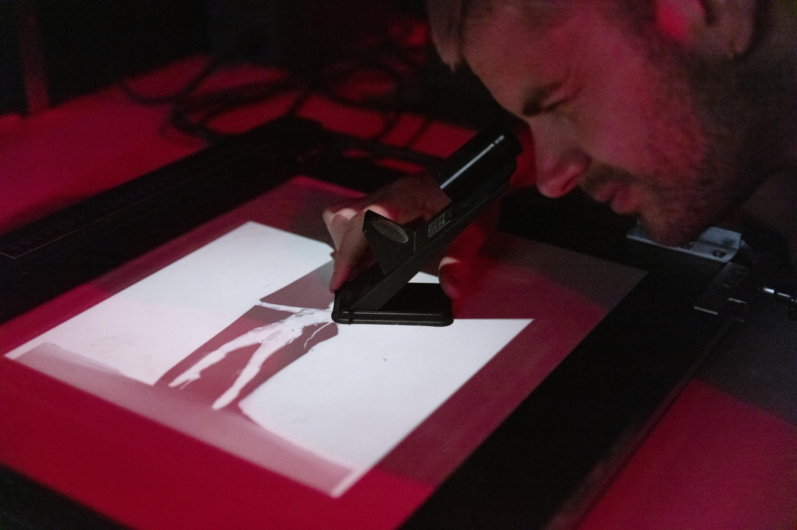
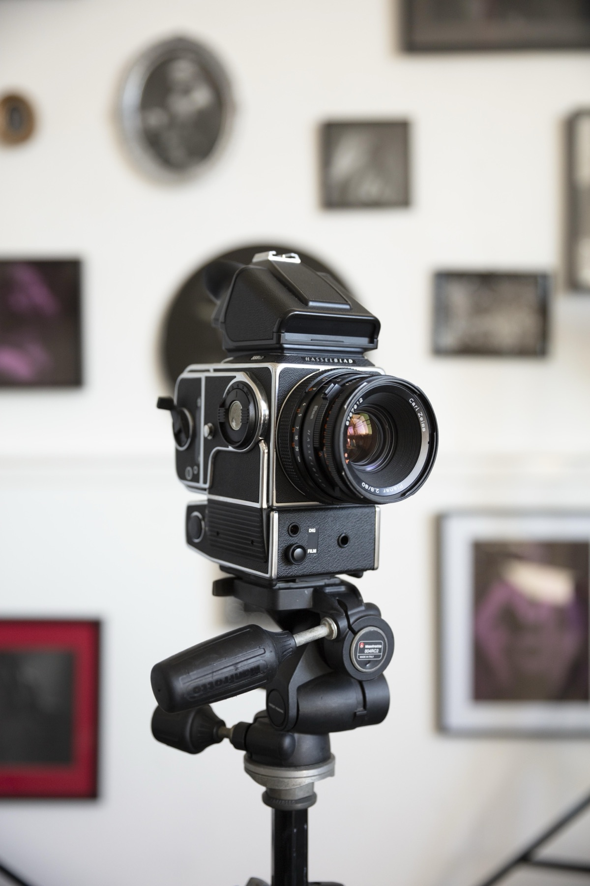

Van camera tot donkere kamer
Een kleinschalige cursus bij Studio Rik Versteeg in Rotterdam. Je doorloopt het volledige analoge proces: van je eerste analoog portret in de fotostudio tot het ontwikkelen en afdrukken van je eigen werk.
Leer het hele analoge proces
In deze kleinschalige cursus slow photography leer je niet alleen hoe je werkt in de donkere kamer, maar ook de basis van analoge fotografie zelf.
Je werkt in een kleine groep van maximaal 4 deelnemers, waardoor er veel ruimte is voor persoonlijke begeleiding en aandacht voor jouw ontwikkeling.
Tijdens de cursus fotograferen deelnemers elkaar — zo leer je niet alleen de techniek, maar ook hoe je werkt met licht, een lichtmeter, iso-instellingen, diafragma, compositie en het vastleggen van een model. Tussen de sessies is er ruimte om te pauzeren en ervaringen uit te wisselen. Een verzorgde lunch is inbegrepen.

Wat ga je leren?
- Basisprincipes van studiofotografie (instellingen, compositie, belichting)
- Werken met een analoge Hasselblad camera
- Elkaar fotograferen — portret en experiment
- Meekijken bij het ontwikkelen van 120 film in de doka
- Werken in de donkere kamer
- Afdrukken maken met een vergroter
- Werken met contrast, teststrips en beeldselectie
Voor wie is deze cursus?
- Beginners die willen starten met analoge fotografie
- Creatieven die meer willen leren over portretfotografie
- Fotografen die hun proces willen verdiepen
- Iedereen die wil werken in een donkere kamer in Rotterdam
Waarom deze cursus?
- Kleine groep — max. 4 personen
- Persoonlijke en artistieke begeleiding
- Combinatie van fotograferen en doka-werk
- Inclusief lunch
- Hands-on: van opname tot eindprint, die je mee naar huis neemt
- Alleen zwart-wit fotografie — volledig analoog
- Alle benodigde materialen inbegrepen
Programma van de dag
-
09:30 – 12:00
📸 Fotografie, filmontwikkeling & film drogen
We starten met een introductie in de basis van analoge fotografie. Daarna gaan de deelnemers elkaar fotograferen met onze Hasselblad camera. Vervolgens ontwikkel je je eigen zwart-wit film in de doka met onze hulp. Om er zeker van te zijn dat het proces goed verloopt zullen we twee rolletjes ontwikkelen. Terwijl de film droogt, bereiden we het tweede deel van de dag voor.
-
12:00 – 12:30
🍽️ Lunch & reflectiemoment
Een gezamenlijke, verzorgde lunch. Dit moment wordt gebruikt om ervaringen te bespreken, beelden te analyseren en vragen te stellen over het proces tot nu toe.
-
12:30 – 16:00
🧪 Afdrukken in de donkere kamer
Je leert hoe je een negatief omzet naar een analoge zwart-wit print met een vergroter. Contactsheet, belichtingstijden, tegenhouden en doordrukken, contrast en compositie — alles om jouw foto's perfect af te drukken.

Kies jouw zondag
Alle cursussen vinden plaats op zondag van 09:30 tot 16:00.
Nieuwe data volgen binnenkort. Mail ons via info@doka-rotterdam.nl.
Praktische informatie
- Eerstvolgende cursus
- Zondag 29 november 2026
- Tijd
- 09:30 – 16:00
- Locatie
- Studio Rik Versteeg, Hildegardisstraat 15 · 3036 NS Rotterdam
- Groepsgrootte
- Maximaal 4 personen
- Inclusief
- Introductie, begeleiding, lunch en alle materialen
- Fotografie
- Uitsluitend zwart-wit
Wil je de volledige magie van analoge fotografie ervaren? Schrijf je in en ontdek hoe jouw beelden tot leven komen — van camera tot print.
Korting via Werktuig PPO
Via Werktuig PPO kun je deze cursus met korting volgen. Bekijk de onderstaande link voor alle informatie over de spelregels en voorwaarden.